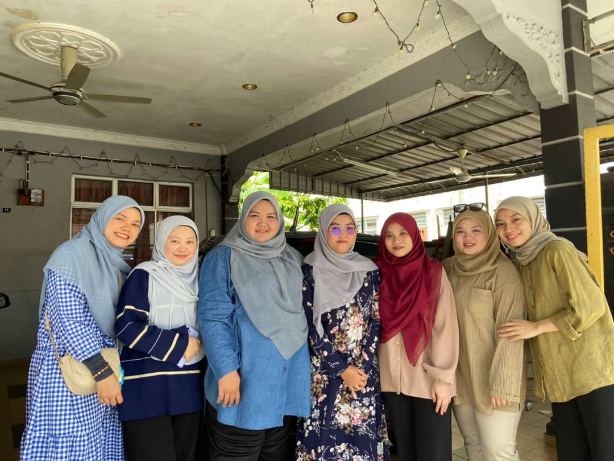
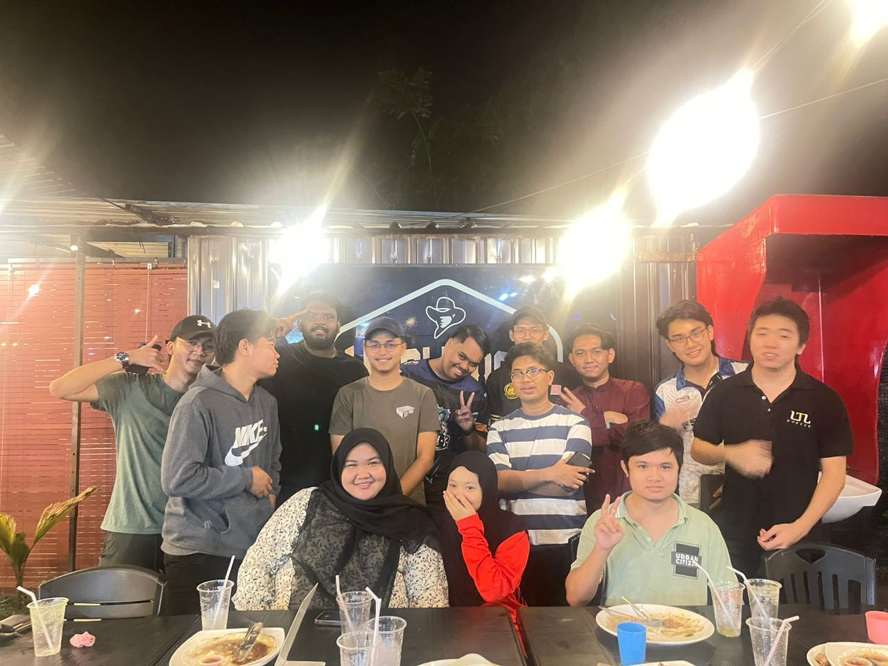

Biodata
Name : Shaza Athirah Binti Badrul KamalDate Of Birth : 20 September 2000
Religion : Islam
Race : Malay
From : Negeri Sembilan
Born : Kuala Terengganu
Course : Bachelor In Programming
Institution : University Tun Hussein Onn
Hobbies
- READING Currently I'm reading online novels on wattpad apps. Free to anyone and it's really convenience with my busy life. Reading is not just a hobby, it's my sanctuary, a boundless realm where I lose myself in the wonders of storytelling. Reading allows me to escape reality and immerse myself in the magic of words. Through reading, I travel through time, explore different cultures, and embrace diverse thoughts.
- BAKING/COOKING Baking and cooking are my creative outlets, where recipes become art and the kitchen transforms into my haven. Experimenting with flavors, mixing ingredients, and watching them transform into delicious masterpieces is a joyous experience. Sharing the homemade delights with loved ones is a gift that brings smiles and bonds us together. It's not just about food but it's about creating memories through the joy of preparing meals and treats.
- TRAVEL Travel is an exhilarating journey that expands my horizons and enriches my soul. Each destination unveils a new chapter in my life, offering a wonderful of experiences, from wandering ancient streets and trying local delicacies to forging connections with people from varied walks of life. The thrill of the unknown and the joy of discovering new places fuel my passion for travel, leaving me with unforgettable memories and a yearning for the next adventure.
Campus Life
As an IT student, my campus life has been an exhilarating journey into the world of technology. The academic experience, for me, it's not just about mastering codes or understanding systems. It's about embracing innovation, problem-solving, and the ever-evolving landscape of programming. The classroom has been a hub of intellectual discourse and practical learning. Engaging with cutting-edge tools, learning programming languages, and delving into complex algorithms has expanded my knowledge base. Collaborating on IT projects, whether in teams or individually, has not only honed my technical skills but also reinforced the significance of adaptability in the fast-paced tech world. Looking forward to the year 2024, my future plans are dedicated to advancing my proficiency in programming languages. My target is deeper into languages such as Python, JavaScript, and explore emerging technologies like artificial intelligence and machine learning. Engaging in advanced courses, practical applications, and contributing to real-world projects are the focal points of this journey. I aim to deepen my expertise, contribute to pioneering solutions, and fortify my skills in the ever-evolving landscape of information technology.

